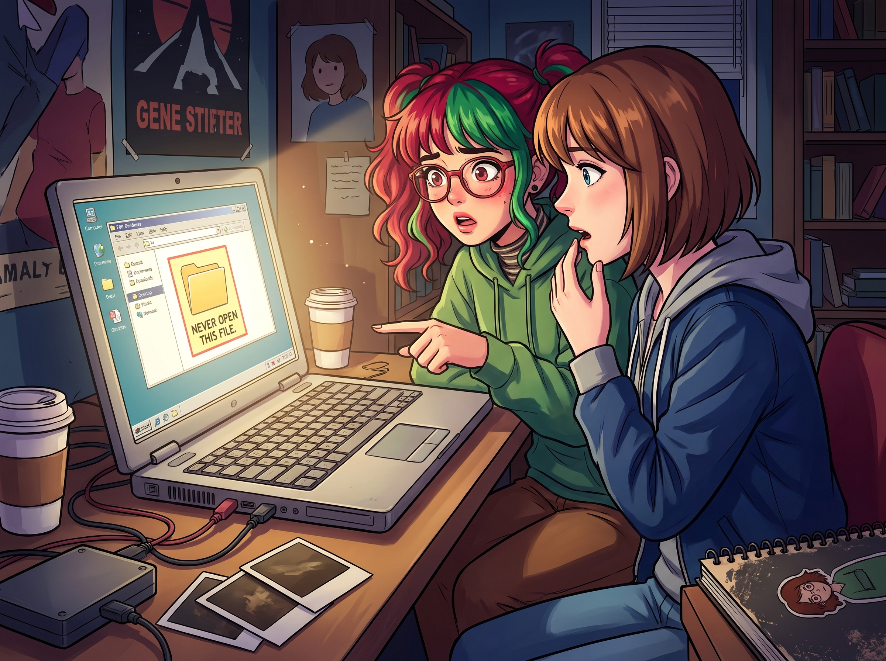
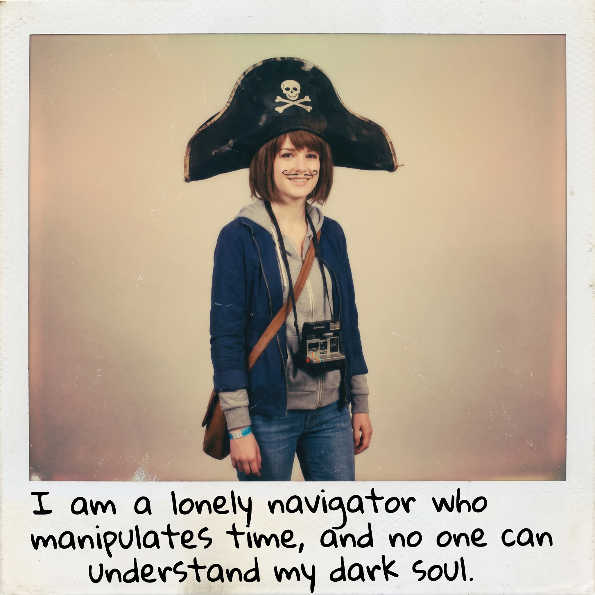

服從性測試（倒敘）


如果 Lily 真的在整理二號車廂儲藏室時，翻到了那箱被 Max 封印在防潮箱最底層的 2013 年阿卡迪亞灣無碼黑歷史檔案，這隻已經完全進化的高智商小白兔，絕對不會像 Chloe 那樣作死地大聲嘲笑。
憋笑憋到內出血？那太低級了。
Lily 會選擇一種最優雅、最殘忍、也最符合她複合型黑魔法總監人設的處刑方式——帶著極致純潔的求知慾，進行公開的學術探討。
這場差點引發二號車廂流血衝突的黑歷史處刑大會，發生在一個原本寧靜的週末下午茶時間。
一、致命的學術請教
四個人正圍著中島吧台吃著 Kate 剛烤好的舒芙蕾。Lily 抱著一台 iPad，乖巧地走到吧台前，推了推圓框眼鏡，臉上帶著那種讓供應商聞風喪膽的 Kate 式天使微笑。
「學姐們，抱歉打擾了。」Lily 的聲音軟糯得像棉花糖，「我剛才在幫 Max 學姐備份 2013 年的舊硬碟時，發現了一個名為絕對不要打開的隱藏資料夾。出於對資料完整性的行政責任感，我進行了破譯與修復。現在有幾個關於歷史文獻的學術問題，想請教一下各位。」
Max 拿著叉子的手僵在半空中，一種不祥的預感順著脊椎爬了上來。
二、精準降維打擊的三連發
Lily 滑動了一下 iPad 螢幕，將畫面轉向 Max，語氣充滿了真誠的困惑：「Max 學姐，這張照片裡，您戴著一頂海盜帽，用眼線筆在嘴唇上畫了兩撇八字鬍，並且在旁邊的照片備註裡寫著：我是操控時間的孤獨航海家，沒有人能理解我的黑暗靈魂。請問，這種被稱為中二病晚期的影像紀錄，是您當時為了探索某種先鋒行為藝術而進行的自我犧牲嗎？」
Max 的臉瞬間漲成了豬肝色。她猛地雙手捂住臉，發出了一聲宛如靈魂出竅般的哀嚎，直接順著高腳凳滑到了吧台底下，假裝自己是一具沒有生命的屍體。
Chloe 剛爆發出一陣震天動地的狂笑，Lily 的手指已經無情地滑到了下一張照片。
「Price 學姐，」Lily 轉向 Chloe，大眼睛裡寫滿了悲憫，「這是一段畫質很模糊的影片。影片裡，您穿著一套亮粉色的仙女裙，背著塑膠翅膀，一邊哭一邊被一隻大白鵝追著繞著學院的停車場跑了三圈。請問，您是為了向這隻水禽展示您海豹突擊隊的極限體能，還是這套粉色仙女裙具備某種特殊的戰術防禦價值？」
「噗——咳咳咳咳！！」Chloe 嘴裡的舒芙蕾直接噴了出來，劇烈地咳嗽著，滿臉驚恐地看著那段她以為早就被大火燒毀的屈辱影片：「妳怎麼會……那隻該死的鵝！Max！妳居然沒有刪掉這段影片？！」
坐在旁邊的 Victoria 冷笑了一聲，剛準備端起紅茶嘲諷兩句底層階級的愚蠢，Lily 的終極處刑已經降臨。
「最後是 Victoria 學姐。」Lily 的笑容越發燦爛，她調出了一份長達十頁的備忘錄截圖，「這是在同一個資料夾裡發現的，名為 Max Caulfield 攝影風格拆解與私服穿搭分析。裡面不僅詳細記錄了 Max 學姐每天的衣服品牌，甚至還有一段極其感人的自白：她那種不修邊幅的廢土感該死的迷人，我什麼時候才能有勇氣找她說話。請問學姐，這種近乎於跟蹤狂級別的迷戀，就是 Chase 財團早期投資潛力藝術家的標準背調流程嗎？」
「啪。」Victoria 手裡的骨瓷茶杯掉在碟子上，名媛的臉色在一秒鐘內經歷了慘白、鐵青、爆紅的三極反轉。她那引以為傲的傲慢面具，在這一刻碎成了比茶杯還要細小的粉末。
三、惡霸們的反撲與掐死她的暴動
短暫的死寂過後，二號車廂爆發了前所未有的暴動。
「刪掉它！立刻！馬上！我給妳十萬美金！把那台該死的 iPad 砸了！」Victoria 尖叫著，踩著高跟鞋就朝 Lily 撲了過去，完全失去了名媛的體面。
「老娘今天要把妳和那隻大白鵝一起做成烤肉！」Chloe 也惱羞成怒地從吧台另一邊翻了過來，張牙舞爪地朝實習生撲去。
就連躲在吧台底下的 Max 都伸出了一隻手，試圖去抓 Lily 的腳踝：「Lily……算我求妳……把它刪了……給我留最後一點尊嚴……」
面對三個惱羞成怒、準備殺人滅口的傢伙，Lily 根本沒有慌張，她甚至沒有後退一步。
因為她知道，自己的背後，站著這條食物鏈的頂端。
四、絕對防禦與終極黑幕
就在 Victoria 的手即將掐住 Lily 脖子的前一秒，一隻白皙、溫柔的手，輕輕端著一盤新烤好的司康餅，擋在了 Lily 面前。
「Victoria，Chloe。坐下。」Kate Marsh 依然掛著那副聖潔無瑕的笑容，聲音輕柔得像一陣春風，但卻帶著一種不可違抗的絕對指令。
兩頭張牙舞爪的惡霸瞬間像是被按了暫停鍵，硬生生地在半空中煞車，狼狽地跌回了座位上。
「Kate 學姐，她們要掐死我。」Lily 乖巧地躲在 Kate 身後，探出半個腦袋，語氣委屈極了。
「她們不敢的，Lily。」Kate 溫柔地拍了拍 Lily 的手背。
隨後，小天使轉過頭，看著滿臉通紅的 Victoria、氣急敗壞的 Chloe，以及剛從吧台底下爬出來、滿頭灰塵的 Max。
「其實，妳們不應該怪 Lily。」Kate 拿起茶壺，優雅地給自己倒了一杯大吉嶺紅茶，嘴角的弧度微微加深了一點，「那個隱藏資料夾的密碼是我破譯的。也是我把路徑放在 Lily 的桌面上，並拜託她進行文獻整理的。」
車廂裡瞬間安靜得連呼吸聲都聽不見。
三個人驚恐地看著正在優雅品茶的 Kate。她們終於明白，今天這場殘忍的黑歷史公開處刑，根本不是實習生的惡作劇，而是這位溫柔天使一手策劃的服從性測試。
「我看妳們最近對 Lily 太過分了，總是教她一些奇怪的東西。」Kate 放下茶杯，無辜地眨了眨眼，「我只是想讓妳們明白，每個人都有不想被別人知道的秘密。所以，以後大家都要相親相愛，不可以再互相欺負了哦。對嗎？」
「……對。我們最相親相愛了。」Chloe 嚥了一口口水，僵硬地回答。
「……我會給 Lily 買最新的蘋果設備當作整理資料的獎金。」Victoria 咬著牙，屈辱地低下了頭。
Max 則是絕望地閉上眼睛，在心裡默默發誓，明天就把所有舊硬碟全部扔進阿卡迪亞灣。
而躲在絕對結界後面的 Lily，則推了推圓框眼鏡，悄悄把那幾張照片上傳到了三個不同的加密雲端備份裡，然後露出了一個深藏功與名的甜美微笑。
故事的時間點，實際發生在第二季波特蘭工坊時期